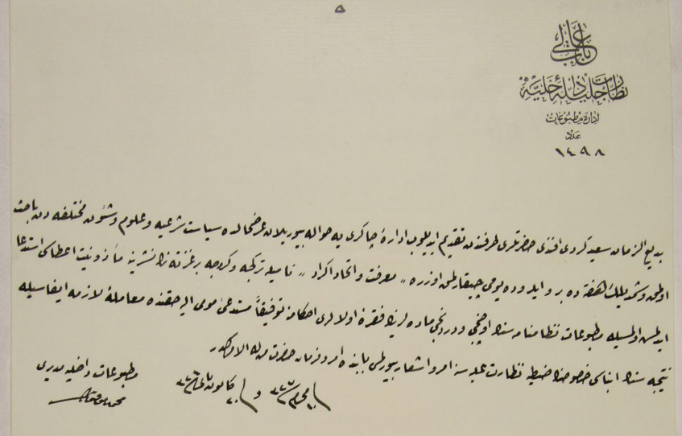

|
Gazete Çýkartmak için Matbuat Ýdaresine Yaptýðý Müracaat |
  
|
|
Gazete Çýkartmak için Matbuat Ýdaresine Yaptýðý Müracaat |
|
Bediüzzaman'ýn Gazete Çýkartmak için Matbuat Ýdaresine Yaptýðý Müracaat

BÂB-I ÂLÎ (HÜKUMET KAPISI)
NEZÂRET-Ý CELÎLE-Ý DÂHÝLÝYE (ÝÇÝÞLERÝ BAKANLIÐI)
Ýdâre-i Matbû’ât (Basým ve Yayýn Ýdaresi)
Aded (Sayý)
1498
Bediüzzaman Said-i Kürdî Efendi Hazretleri tarafýndan takdim edilip Ýdare-i Çakerîye (Ýdaremize) havale buyurulan arz-ý halde (dilekçede) siyaset-i þer’iye (Ýslami ölçülere uygun siyaset) ve ulûm ve þu’ûn-ý muhtelifeden (çeþitli ilimler ve iþlerden) bâhis olmak (bahsetmek) ve þimdilik haftada bir, ileride yevmî (günlük) çýkarýlmak üzere “Ma’rifet ve Ýttihad-ý Ekrâd” (Ýlim ve Kürtlerin Birliði) nâmýyla Türkçe ve Kürtçe bir gazete neþrine me’zuniyet i’tasý istid’â edilmiþ (izin verilmesi istenmiþ) olmasýyla Matbû’ât Nizamnamesinin üçüncü ve dördüncü maddelerinin fýkra-i ûlâlarý ahkamýna tevfikan (birinci fýkralarý hükümlerine uygun) müsted’î-i mûmâ ileyh (dilekçe sahibi) hakkýnda mu’âmele-i lazýmenin îfâsýyla (gerekli iþlemin yapýlmasýyla) neticesinin inbâsý (bildirilmesi) hususunun Zabtiye Nezaret-i Aliyyesine (Güvenlik Bakanlýðýna) emr ve iþ’âr buyurulmasý bâbýnda (emredilmesi ve yazý ile bildirilmesi konusunda) emr u ferman hazret-i men lehü’l-emrindir (emir ve ferman sizindir).
Fî 10 Muharrem sene 327 ve Fî 20 Kanun-ý sânî sene 324 (01 Þubat 1909)
Matbû’ât-ý Dâhiliye Müdiri
Mehmed Tevfik
Fon Kodu: BOA.DH.MKT., Dosya No:2730, Gömlek No:76
Kaynak: RisaleHaber.Com